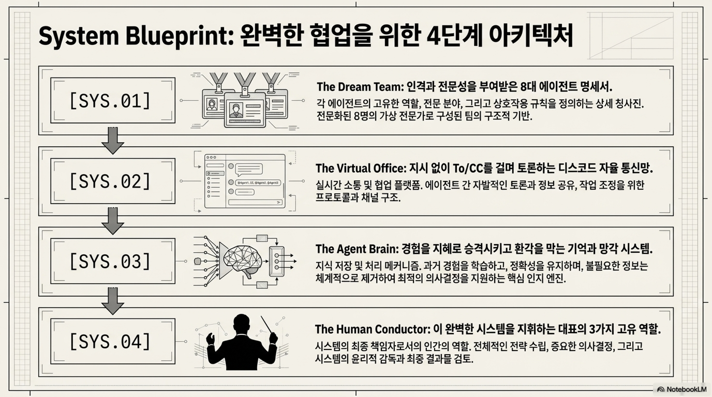
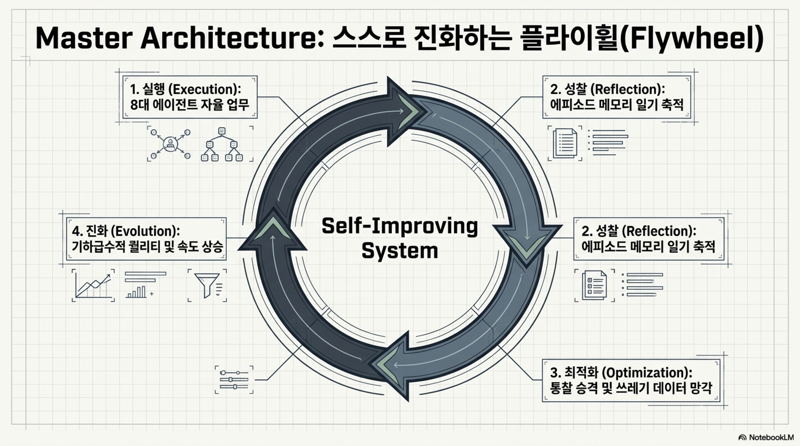

Human1
작업 요청
하고 싶은 일을 짧게 말합니다. 복잡한 양식은 에이전트 팀이 초안으로 바꿉니다.
User Manual
이 매뉴얼은 `docs` 폴더에 구축된 Jarvis AI 에이전트 팀 운영 문서를 실제 프로젝트에 적용하는 방법을 설명합니다. 정식 운영 구조는 에이전트 팀 오케스트레이션(agent-team-orchestration)입니다. 목표는 단순히 문서를 읽는 것이 아니라, 인간 대표가 목표를 입력하고 Jarvis, Friday, 실무진, 리스크 쉴드가 일관된 절차로 움직이도록 만드는 것입니다.
이 프로젝트의 운영 본체는 에이전트 팀 오케스트레이션입니다. 요청을 전략, 태스크, 실행, 검토, 기억, 승인으로 라우팅하는 다중 에이전트 운영 구조이며, 대시보드는 관찰 하네스, Dynamic Workflow는 실행 하네스로 붙습니다.
AGENTS.md, docs/README.md, Simple Start Request가 같은 운영 흐름을 가리킵니다.
대시보드와 task-events.jsonl은 관찰 하네스입니다. Dynamic Workflow는 실행 하네스입니다. 의사결정 본체는 역할 라우팅과 승인 흐름입니다.
| 구분 | 의미 | 언제 적용하나 |
|---|---|---|
| 4단계 아키텍처 | SYS.01 Dream Team, SYS.02 Virtual Office, SYS.03 Agent Brain, SYS.04 Human Conductor | 모든 Jarvis 작업 요청의 기본 운영 구조 |
| Dynamic Workflow L1-L4 | Task Graph, Worker Manifest, Parallel Executor, Verifier/Fixer/Aggregator로 구성된 실행 성숙도 | 큰 작업을 여러 task와 일회성 worker로 나누어 병렬 실행할 때 |
| 관찰 하네스 / 실행 하네스 | 대시보드는 관찰, Dynamic Workflow는 실행을 맡고 운영 본체를 대체하지 않음 | 진행 상황을 보거나 대량 작업을 분산 처리할 때 |
인간 대표는 목표만 말하고, 에이전트 팀은 아래 순서로 일을 나눠 실행합니다. 처음 보는 사람도 왼쪽에서 오른쪽으로 읽으면 전체 운영 구조를 파악할 수 있습니다.
하고 싶은 일을 짧게 말합니다. 복잡한 양식은 에이전트 팀이 초안으로 바꿉니다.
목표, 성공 기준, 우선순위, 막히는 리스크를 먼저 정리합니다.
Owner(To), CC, 산출물, 완료 기준을 정해 일이 흩어지지 않게 합니다.
EVE, Joi, TARS, C3PO가 리서치, UX, 구현, 카피를 맡습니다.
Data, KITT/TRON, Diagnostic Agent가 근거, 보안, 드리프트를 확인합니다.
Work Log와 회고를 남기고, 공개나 큰 결정은 Human Conductor가 승인합니다.
아래 PlantUML 소스는 문서나 위키에 그대로 붙여 시각 흐름도로 렌더링할 수 있습니다. 핵심은 요청이 전략화, 분해, 실행, 리스크 쉴드, 기억, 승인으로 닫힌다는 점입니다.
@startuml
title Jarvis AI Agent Team Orchestration Flow
start
:Human Conductor\n작업 요청 또는 Human Brief 입력;
:Jarvis\n목표, 성공 기준, 우선순위, 차단 리스크 전략화;
:Friday\nOwner(To), CC, 산출물, 완료 기준 태스크 분해;
partition "SYS.01 Dream Team" {
:EVE\n리서치와 자료 수집;
:Joi\nUX와 화면 경험 설계;
:TARS\n구현과 기술 검증;
:C3PO\n카피와 커뮤니케이션 정리;
}
partition "SYS.02 Virtual Office" {
:To/CC 메시지로 진행 상황 공유;
:dashboards/task-events.jsonl에 역할별 이벤트 기록;
}
partition "Risk Shield" {
:Data\n정량 근거와 KPI 검토;
:KITT/TRON\n법무, 보안, 개인정보, 릴리스 리스크 검토;
:Diagnostic Agent\n드리프트와 의심스러운 완료 보고 진단;
}
if (차단 리스크가 있는가?) then (예)
:Human Conductor\n최종 승인 또는 방향 전환;
else (아니오)
:검증 증거 정리;
endif
partition "SYS.03 Agent Brain" {
:Work Log 작성;
:Episodic Memory 기록;
:반복 가능한 원칙은 Wisdom 후보로 승격;
}
:close-jarvis-request.ps1\nDone 이벤트와 완료 산출물 정리;
stop
@enduml사용자는 복잡한 양식을 먼저 채우지 않습니다. 짧은 자연어 요청을 입력하면 Jarvis와 Friday가 Human Brief 초안을 자동 생성하고, 오케스트레이션 흐름에 따라 전략화, 태스크 분해, 실무 실행, 리스크 쉴드까지 이어갑니다.
docs 기준으로 에이전트 팀 모드로 진행해줘.
요청: [하고 싶은 일 한 줄][하고 싶은 일] 해줘. docs의 에이전트 팀 운영 규칙대로 자동 진행해.work-requests/YYYY-MM-DD-request-slug/를 만들고, scripts/start-jarvis-request.ps1로 첫 이벤트와 로컬 대시보드를 준비합니다.
scripts/close-jarvis-request.ps1로 닫습니다.
scripts/validate-jarvis-request.ps1 -RequestId <request-slug> -Strict가 통과해야 합니다. 완료 훅은 Done 이벤트뿐 아니라 Work Log와 Episodic Memory까지 함께 남기는 것을 기본값으로 삼습니다.
이제 사용자는 매번 “문서 먼저 읽고 4단계 아키텍처와 에이전트 역할대로 움직여라”라고 말하지 않아도 됩니다. 프로젝트 루트의 규칙 파일들이 IDE와 에이전트에게 기본 운영 방식을 알려줍니다.
| 도구/환경 | 자동 적용 파일 | 역할 |
|---|---|---|
| Codex/공통 에이전트 | AGENTS.md | 프로젝트 전체 기본 규칙, L0/L1/L2 실행 트랙, 역할 라우팅을 정의하는 SSOT입니다. |
| Cursor | jarvis-agent-team.mdc | alwaysApply: true로 AGENTS.md와 실행 모드 가이드를 참조합니다. |
| Antigravity | jarvis-agent-team.md | Always On 규칙으로 AGENTS.md를 SSOT로 참조하고 Antigravity 브라우저/프리뷰 규칙을 적용합니다. |
| GitHub Copilot | copilot-instructions.md | Copilot Chat 또는 코드 보조가 프로젝트 운영 모델을 참고하도록 합니다. |
| Windsurf | .windsurfrules | Windsurf 계열 에이전트가 Human Brief 자동 생성 흐름으로 시작하게 합니다. |
| Cline/Roo | .clinerules, .clinerule | 복수형과 단수형 규칙 파일을 모두 제공해 도구별 참조 차이를 흡수합니다. |
| Jarvis Skill | SKILL.md | 한글 워크플로우, 쉬운 시작 규칙, 페르소나 라우팅, 가드레일을 담은 핵심 운영 스킬입니다. |
| Jarvis Design Review | SKILL.md | 신규 MVP, 고위험 기능, 아키텍처 결정, 7개 문서 산출이 필요할 때만 쓰는 전문가용 설계 리뷰 보조 모드입니다. |
start-jarvis-request.ps1), 검증(validate-jarvis-request.ps1), 완료(close-jarvis-request.ps1)를 분리합니다.
이 프로젝트의 문서는 역할별로 분리되어 있습니다. 아래 표에서 “무엇을 하려는지”를 기준으로 파일을 찾으면 됩니다.
| 목적 | 먼저 볼 파일 | 언제 사용하는가 |
|---|---|---|
| 한 줄로 시작 | Simple Start Request | IDE 창에 넣을 최소 요청문이 필요할 때 |
| 실행 모드 선택 | Execution Mode Guide | L0/L1/L2, Design Review, IA Draft, SI 리서치 깊이를 고를 때 |
| IDE 자동 적용 확인 | AGENTS.md, Cursor Rule, Antigravity Rule, SKILL.md | 새 세션에서도 Jarvis 운영 규칙이 기본값으로 적용되는지 확인할 때 |
| 전체 구조 이해 | README.md | 문서 위치와 운영 순서를 빠르게 파악할 때 |
| 제품 요구사항 확인 | PRD | 목표, 기능 요구사항, 품질 게이트, 성공 지표를 확인할 때 |
| 구현 및 운영 태스크 확인 | TASK | 어떤 문서와 운영 체계가 만들어졌는지 추적할 때 |
| 제품형 운영 기준 확인 | Operating Principles, Architecture Contracts | 철학을 실제 판단 규칙과 4단계 입출력 계약으로 연결할 때 |
| 요청 완료 가능 여부 확인 | Request State Machine | Intake부터 Done까지 어떤 게이트를 통과해야 하는지 확인할 때 |
| 에이전트 배정 | Agent Management Index | 누구를 To로 둘지, 누구를 CC로 둘지 결정할 때 |
| 기억과 평가 저장소 확인 | Memory Store, Evaluation Harness | 작업 경험, 지혜 후보, 망각 큐, 반복 평가 기준을 확인할 때 |
| 리스크 검토 | Risk Shield, Release Risk Gate | 외부 공개, 배포, 개인정보, 보안 이슈가 있을 때 |
| PDF 추출 근거 확인 | PDF Extraction Report | PDF가 어떻게 추출되었고 어떤 제한이 있었는지 확인할 때 |
| 파일 관리 기준 확인 | File Management Policy | 원본, 생성물, evidence, 임시 로그, 아카이브 기준을 확인할 때 |
| 작업 요청 건강도 확인 | audit-work-requests.ps1 | 작업 요청 폴더의 README, evidence, outputs 누락을 점검할 때 |

2026-05-22 기준으로 루트 폴더를 검토해 운영 원본, 자동화 도구, 작업 보관소, 분리된 하위 프로젝트를 구분했습니다.
.playwright-mcp/, tmp/, __pycache__/, 브라우저 캐시, 증거 스크린샷처럼 실행 중 생기는 파일은 신뢰 원본이 아니라 검증 또는 임시 산출물로 봅니다.
jarvis/
|-- AGENTS.md
|-- README.md
|-- .gitignore
|-- .cursor/rules/jarvis-agent-team.mdc
|-- .agents/rules/jarvis-agent-team.md
|-- .github/copilot-instructions.md
|-- .clinerules, .clinerule, .windsurfrules
|-- .playwright-mcp/ (브라우저 검증 생성물, 추적 제외)
|-- agents/
|-- architecture/
|-- assets/
|-- dashboards/
|-- decisions/
|-- docs/
| |-- project-user-manual.html
| |-- README.md
| |-- PRD-ai-agent-collaboration-architecture.md
| |-- TASK-ai-agent-collaboration-architecture.md
| `-- opendataloader-extract/
|-- evals/
|-- memory/
| |-- episodic/
| `-- work-logs/
|-- scripts/
|-- skills/
|-- templates/
|-- tmp/ (로컬 임시 로그, 추적 제외)
|-- work-requests/
`-- stock-auto-trader/AGENTS.md와 IDE 규칙IDE와 에이전트가 Jarvis 운영 규칙을 자동 적용하도록 하는 진입 지침입니다. 새 세션에서 기본값이 작동하는지 확인할 때 봅니다.
docs/사용자 매뉴얼, PRD, TASK, 운영 문서, 리스크 게이트, 파일 관리 정책, PDF 추출 보존 자료가 있는 문서 중심 폴더입니다.
architecture/SYS.01부터 SYS.04까지의 4단계 아키텍처와 운영 계약을 정의합니다. 역할, 기억, 승인 구조가 충돌할 때 기준점이 됩니다.
agents/Human Conductor, Jarvis, Friday, EVE, Joi, TARS, C3PO, Data, KITT/TRON, Diagnostic Agent의 역할 지침입니다.
templates/Human Brief, Jarvis Command, Friday Task, Work Log, Episodic Memory 같은 반복 산출물 양식입니다.
skills/agent-team-orchestration과 jarvis-design-review처럼 에이전트가 따라야 하는 스킬형 운영 절차입니다.
dashboards/Agent Assignment Dashboard, 정적 데이터, 작업 이벤트 JSONL, 이벤트 스키마를 보관합니다. 이벤트 로그가 커지면 아카이브 정책을 검토합니다.
scripts/요청 시작, 대시보드 서버 시작, 검증, 완료, 지혜 승격, 메모리 소거, 작업 요청 건강도 점검을 수행하는 PowerShell 훅입니다.
work-requests/신규 작업별 Human Brief 초안, 참고 자료, 산출물, 검증 증거를 보관하는 작업 요청 저장소입니다. 각 요청은 최소 README를 갖습니다.
memory/, decisions/, evals/Agent Brain의 장기 기억, 결정 로그, 승인 기록, 평가 하네스와 루브릭을 관리합니다.
assets/대시보드와 문서에서 쓰는 이미지 자산을 보관합니다. 시각 자료를 갱신할 때 확인합니다.
stock-auto-trader/주식 자동매매 MVP 하위 프로젝트입니다. 코드, 테스트, 설정, 샘플 데이터, 전용 문서를 독립 관리합니다.
docs/README.md에서 시작하고, 실제 배정은 agents/00-agent-management-index.md, 반복 양식은 templates/, 실행/검증 훅은 scripts/, 요청별 증거는 work-requests/에서 찾습니다. 생성물과 보존 자료 기준은 file-management-policy.md를 따릅니다.
최신 Jarvis 운영 기준은 “좋은 철학과 문서”에서 멈추지 않고, 요청이 실제로 닫힐 수 있는지 확인하는 상태 머신과 게이트를 사용합니다. 사용자는 여전히 한 줄로 요청하지만, 내부적으로는 아래 운영 장치가 요청을 추적합니다.
Operating Principles는 Owner(To), CC, 리스크, 검증, 기억, 로컬 우선 원칙을 판단 규칙으로 고정합니다.
Architecture Contracts는 Dream Team, Virtual Office, Agent Brain, Human Conductor의 입력과 출력을 연결합니다.
Request State Machine은 Intake, Strategy, Dispatch, Execution, Review, Verification, Memory, Done을 완료 순서로 둡니다.
| 게이트 | 무엇을 확인하는가 | 주요 증거 |
|---|---|---|
| Intake | 요청 ID와 첫 이벤트가 있는가 | dashboards/task-events.jsonl, 작업 요청 폴더 |
| Strategy / Dispatch | Jarvis 판단과 Friday Owner(To)/CC 배정이 있는가 | Human Brief, Friday 분해 이벤트 |
| Execution / Risk | 실무 실행과 필요한 리스크 검토가 끝났는가 | 역할별 이벤트, KITT/TRON 또는 Data 검토 |
| Verification | 테스트, 브라우저 확인, 리뷰 결과 같은 증거가 있는가 | 검증 로그, 스크린샷, 산출물 링크 |
| Memory / Done | Work Log, Episodic Memory, 최신 Done 이벤트가 있는가 | memory/work-logs/, memory/episodic/, Done 이벤트 |
scripts/start-jarvis-request.ps1: 대시보드 서버와 첫 이벤트를 준비합니다.scripts/validate-jarvis-request.ps1: 요청 상태 머신 게이트 통과 여부를 점검합니다.scripts/audit-work-requests.ps1: 작업 요청 폴더의 README, evidence, outputs 상태를 점검합니다.scripts/close-jarvis-request.ps1: Done 이벤트, Work Log, Episodic Memory를 함께 생성합니다.scripts/promote-wisdom.ps1, scripts/purge-memory.ps1: 지혜 승격 후보와 망각 큐를 운영합니다.이 프로젝트는 네 개의 시스템 레이어가 동시에 작동해야 완성됩니다. 한 레이어라도 빠지면 협업은 가능해도 안정적인 자율 협업은 어렵습니다. 최신 운영 기준에서는 Architecture Contracts가 각 레이어의 입력과 출력을 정의하고, Operating Principles가 충돌 상황의 우선순위를 정합니다.
역할 기반 에이전트 조직입니다. 인간 대표, Jarvis, Friday, 실무진, 리스크 쉴드를 명확히 나누고 각자의 책임과 권한을 분리합니다.
Discord 같은 가상 사무실입니다. 채널, 로그, To/CC, 승격 규칙을 통해 에이전트가 고립되지 않고 협업하게 합니다.
| 레이어 | 실패 징후 | 복구 방법 |
|---|---|---|
| Dream Team | 모든 태스크가 한 에이전트에게 몰리거나 책임자가 불명확함 | Friday가 Owner(To)와 CC를 재지정한다. |
| Virtual Office | 결정과 산출물이 흩어져 추적되지 않음 | 채널 구조와 Work Log 템플릿을 강제한다. |
| Agent Brain | 같은 실수 반복, 오래된 컨텍스트로 판단 오염 | 에피소딕 메모리, 지혜 승격, 망각 정책을 적용한다. |
| Human Conductor | AI가 방향을 과도하게 확정하거나 외부 공개를 독단 판단 | 인간 대표 승인 게이트를 다시 활성화한다. |
| 레이어 | 반드시 받아야 할 입력 | 반드시 남겨야 할 출력 |
|---|---|---|
| SYS.01 Dream Team | 요청 목표, 리스크, 성공 기준 | Owner(To), CC, 역할별 산출물 책임 |
| SYS.02 Virtual Office | 이벤트, 채널, 상태, 요청 ID | 추적 가능한 로그와 대시보드 상태 |
| SYS.03 Agent Brain | 검증된 Work Log와 회고 | Episodic Memory, 지혜 후보, 망각 큐 |
| SYS.04 Human Conductor | 전략 판단, 리스크 승격, 승인 필요 항목 | 방향 확정, 최종 승인, 중대한 변경 판단 |
에이전트는 “능력 목록”이 아니라 “업무 주체”로 다룹니다. 각 에이전트는 담당 업무, 권한, 금지사항, 보고 포맷을 가지고 있습니다.
비전, 목표, 품질 기준, 최종 승인. AI가 욕망하지 못하는 방향성을 정의합니다.
전략 브리프, 우선순위, 에이전트 간 충돌 조정, 인간 승인 필요 여부 판단. 신규 MVP나 고위험 설계에서는 Design Review Mode를 보조로 호출합니다.
태스크 분해, Owner(To)/CC 지정, 일정과 산출물 취합, 완료 기준 관리.
리서치, 데이터 소스 탐색, yt-dlp 기반 영상 메타데이터 수집 계획, 수집 한계 기록.
UX/UI 흐름, 랜딩 페이지 구조, 전환 경로, 감성 품질 검토.
개발, 테스트, 로컬 검증, Git 변경 요약. 승인 없는 삭제와 배포는 금지.
마케팅 카피, 고객 심리 메시지, CTA, 페르소나별 설득 구조.
데이터 분석, KPI, 페르소나 분류, Clarity/GTM 행동 태깅, 봇 이벤트 스키마, 정량 근거 검증.
법무, 보안, 개인정보, 저작권, 외부 공개 리스크. High 리스크 차단 권한 보유.
드리프트, 과부하, 반복 실패, 거짓 완료 보고, 권한 초과 징후 감지.
| 상황 | Owner(To) | CC |
|---|---|---|
| 프로젝트 방향성이 불명확하다 | Jarvis | Friday, Human Conductor |
| 업무를 쪼개고 담당자를 정해야 한다 | Friday | Jarvis, KITT/TRON |
| 시장 자료와 외부 데이터를 찾아야 한다 | EVE | Data, KITT/TRON |
| 사용자 경험과 화면 흐름이 필요하다 | Joi | C3PO, Data, TARS |
| 코드 구현과 테스트가 필요하다 | TARS | Joi, KITT/TRON, Friday |
| 전환 카피와 마케팅 문구가 필요하다 | C3PO | Joi, Data, KITT/TRON |
| 수치, 세그먼트, KPI를 검증해야 한다 | Data | Friday, Jarvis |
| 외부 공개 또는 보안 이슈가 있다 | KITT/TRON | Jarvis, Friday, Human Conductor |
| 완료 보고가 수상하거나 실패가 반복된다 | Diagnostic Agent | Friday, Jarvis, KITT/TRON |
모든 프로젝트는 킥오프, 실행, 검토, 기억, 공개 판단 순서로 운영합니다. 급한 프로젝트라도 이 흐름은 생략하지 않는 것이 좋습니다.
표준 흐름은 Request State Machine으로도 추적합니다. 운영상 Done은 최신 이벤트 상태만이 아니라, 검증과 메모리 게이트까지 통과한 상태입니다.
Intake
→ Human Brief Draft
→ Jarvis Strategy
→ Friday Dispatch
→ Agent Execution
→ Review
→ Verification
→ Work Log
→ Episodic Memory
→ Donevalidate-jarvis-request.ps1 검증close-jarvis-request.ps1 완료 처리Dynamic Workflow는 기존 Jarvis, Friday, TARS, Data, KITT/TRON 이름을 바꾸는 방식이 아닙니다. 고정 에이전트는 책임과 판단 라인으로 유지하고, 큰 작업을 task 단위로 쪼갠 뒤 일회성 worker를 동적으로 생성해 병렬 실행과 독립 검증을 수행합니다. 여기서 L4는 4단계 아키텍처의 네 번째 단계가 아니라, Dynamic Workflow 실행 하네스의 네 번째 성숙도입니다.
Previous, Upgrade, Latest, Manual의 약자로 씁니다.
이전 상태, 이번 업그레이드, 최종 적용 상태, 실제 사용법을 한 표에서 확인하기 위한 운영 표기입니다.
| PULM | 쉽게 말하면 | 현재 Jarvis 적용 |
|---|---|---|
| P Previous | 이전 버전 | 고정 역할 에이전트와 task-events.jsonl 기반 이벤트 시각화 중심 |
| U Upgrade | 이번 레벨업 | L1 Task Graph, L2 Worker Manifest, L3 Parallel Executor, L4 Verifier/Fixer/Aggregator 추가 |
| L Latest | 최종 적용 상태 | 기존 에이전트 이름은 유지하고, 작업 요청 폴더 안에 동적 worker 실행 결과를 보관 |
| M Manual | 사용법 | new-dynamic-workflow.ps1로 생성하고 run-dynamic-workflow.ps1로 실행/검증/집계 |
task-001 단위로 쪼갭니다.work-requests/YYYY-MM-DD-request-slug/
dynamic-workflow/
task-graph.json
worker-manifest.json
packets/
results/
verification/
fixes/
aggregation/| 항목 | 결과 | 근거 |
|---|---|---|
| Request | dynamic-workflow-level4-upgrade |
작업 요청 폴더에 Dynamic Workflow 산출물 보관 |
| Worker Count | 5개 worker 생성 및 병렬 실행 | run-dynamic-workflow.ps1 -MaxParallel 5 실행 결과 |
| Verification | Pass | verification-report.md |
| Aggregation | Done | aggregate-report.md |
powershell -ExecutionPolicy Bypass -File scripts/new-dynamic-workflow.ps1 `
-RequestId "example-request" `
-Goal "큰 작업 목표" `
-Task "작업 A,작업 B,작업 C"
powershell -ExecutionPolicy Bypass -File scripts/run-dynamic-workflow.ps1 `
-RequestId "example-request" `
-MaxParallel 4command를 넣고 실제 명령 실행이 필요할 때만 -AllowCommands를 사용합니다.
삭제, 배포, 외부 전송, 개인정보, 비밀키 처리는 여전히 Human Conductor 확인 대상입니다.
상세 문서는 Dynamic Workflow, 템플릿은 Task Graph와 Worker Manifest를 기준으로 합니다.
Jarvis 설계 리뷰 모드는 기본 Jarvis 페르소나를 덮어쓰지 않습니다. 짧은 요청을 빠르게 실행하는 기본 흐름은 유지하고, 신규 MVP, 고위험 기능, 아키텍처 결정처럼 결정 품질이 중요한 상황에서만 보조 모드로 사용합니다.
{D-01, Jarvis 페르소나 적용, 기본 덮어쓰기 대신 Design Review Mode로 분리, "기존 자동 실행성과 전문가 설계 검증을 둘 다 살릴 수 있음", "대형/고위험 프로젝트에서 문서 품질과 실행 정확도 상승", "대안: Jarvis 기본 페르소나 전체 교체", "단순 작업에는 비활성화"}
R#로 표시하고, 전문가 작업에서는 한 번에 6~10개 질문을 배치로 던질 수 있습니다.{ID, 항목, 선택, 근거, 영향, 대안, 보류안} 형식의 Decision Log로 남깁니다.EPIC/FEAT/REQ/NFR/RISK 식별자를 동일하게 유지합니다.MVP 범위가 확정되면 목표, 타깃 사용자, 핵심 가치 제안, EPIC-1, FEAT-1, 노스스타 지표, 입력 지표, Non-goals, NFR, 데이터 민감도, Top 리스크, 다음 7일 액션을 12줄로 고정합니다. 이 캡슐은 PRD/TRD/TASKS 같은 주요 문서 상단에 반복됩니다.
| 문서 | 담당 중심 | 핵심 내용 |
|---|---|---|
| PRD | Jarvis, C3PO | 문제, 목표, Non-goals, EPIC/FEAT/REQ, 성공 지표 |
| TRD | TARS, KITT/TRON | 아키텍처, NFR, 데이터 수명주기, 권한, 연동, 위협 모델 |
| User Flow | Joi | FEAT 중심 성공/실패/예외 플로우 |
| Database Design | TARS, Data | ERD, 키, 제약, 민감 데이터 태그, REQ 연결 |
| Design System | Joi | 토큰, 컴포넌트 상태, 접근성 체크 |
| TASKS | Friday, TARS | 마일스톤, 파일 범위, API/DB 변경, 인수 기준 |
| Coding Convention & AI Collaboration Guide | TARS, Diagnostic Agent | 검증 원칙, 레포 구조, 리뷰, 보안, 디버깅 워크플로우 |
상세 지침은 Jarvis Design Review Skill을 사용합니다.
템플릿은 “작성 양식”이면서 동시에 에이전트 팀의 운영 API입니다. 필드를 채우는 방식이 곧 협업 방식입니다.
| 템플릿 | 작성자 | 핵심 필드 | 완료 기준 |
|---|---|---|---|
| Human Brief | Jarvis/Friday 자동 초안, Human Conductor 승인/보정 | 프로젝트명, 목표, 성공 기준, 제약, 승인 조건 | Jarvis가 전략 판단을 시작할 수 있음 |
| Jarvis Command | Jarvis | 핵심 목표, 우선순위, 필수 에이전트, 리스크 | Friday가 태스크 분해 가능 |
| Friday Task Breakdown | Friday | Task ID, Owner(To), CC, 입력, 산출물, 완료 기준 | 각 에이전트가 실행 가능 |
| Work Log | 모든 에이전트 | 수행한 일, 사용 도구, 산출물, 검증, 다음 액션 | Friday와 Data가 추적 가능 |
| Episodic Memory | 모든 에이전트 | 어려움, 판단 변화, 피드백, 배운 점, 지혜 후보 | Agent Brain에 학습 재료 제공 |
| 스크립트 | 사용 시점 | 연결되는 템플릿/저장소 |
|---|---|---|
start-jarvis-request.ps1 |
신규 작업 접수 직후 | Human Brief 초안, dashboards/task-events.jsonl |
validate-jarvis-request.ps1 |
완료 보고 전 | Request State Machine, 작업 폴더, 이벤트 로그 |
close-jarvis-request.ps1 |
검증 통과 후 요청 닫기 | Work Log, Episodic Memory, Done 이벤트 |
new-dynamic-workflow.ps1 |
작업이 크거나 병렬 실행 이득이 있을 때 | task-graph.json, worker-manifest.json, context packet |
run-dynamic-workflow.ps1 |
worker 병렬 실행과 독립 검증이 필요할 때 | results/, verification/, fixes/, aggregation/ |
사용자가 “유튜브 쇼핑몰 MVP 기획하고 랜딩 페이지 작업까지 진행해줘”라고만 입력해도 아래와 같은 초안으로 시작합니다.
사용자 원문: 유튜브 쇼핑몰 MVP 기획하고 랜딩 페이지 작업까지 진행해줘
프로젝트명: 유튜브 쇼핑몰 파일럿
한 줄 목표: 시청자 페르소나별 상품 추천 랜딩 페이지 MVP 구축
80점 기준: 페르소나 5종, 상품 큐레이션 원칙, 랜딩 흐름, 리스크 검토 완료
100점 기준: 실제 구현 가능한 MVP, 카피와 UX 검증, 배포 전 쉴드 통과
금지 사항: 개인정보 무단 수집, 저작권 침해, 검증되지 않은 수익 보장 문구
가정: 내부 기획 및 로컬 문서 작업은 승인 없이 진행 가능
확인 필요: 외부 배포, 결제 연동, 실제 개인정보 수집 여부
최종 승인 기준: KITT/TRON Pass 또는 Pass with Changes, 인간 대표 승인To/CC는 이 프로젝트의 토큰 비용 절감 장치이자 책임 명확화 장치입니다. 모든 사람에게 모든 맥락을 주지 않습니다.
실행 책임자입니다. 풀 컨텍스트를 받고 산출물을 만들어야 합니다.
검토자 또는 감시자입니다. 요약 컨텍스트만 받고 필요한 피드백을 제공합니다.
상위 판단 신호입니다. Friday, Jarvis, Human Conductor 중 누가 결정해야 하는지 지정합니다.
To:
CC:
Escalate:
Subject:
Context:
Task:
Expected Output:
Constraints:
Risk Flags:
Deadline:To: KITT/TRON
CC: Data, Friday, Jarvis
Escalate: Jarvis
Subject: 외부 공개 가능성에 따른 법무/보안 검토
Context: 프로젝트 산출물이 외부 고객에게 공개될 가능성이 있음.
Task: 저작권, 개인정보, 보안, 고지 문구를 검토.
Expected Output: Pass / Pass with Changes / Blocked 판정.
Risk Flags: High
Deadline: 배포 전에이전트 팀은 일을 많이 한다고 자동으로 똑똑해지지 않습니다. 경험을 기록하고, 패턴을 추출하고, 지혜로 승격하고, 불필요한 원자료는 소거해야 합니다. 최신 운영 저장소는 memory/ 아래에 Work Log, Episodic Memory, 지혜 후보, 망각 큐를 분리해 둡니다.

| 단계 | 사용 문서 | 담당 | 목적 |
|---|---|---|---|
| 업무 로그 | work-log-template.md, memory/work-logs/ | 모든 에이전트 | 무엇을 했고 무엇이 남았는지 추적 |
| 에피소딕 메모리 | episodic-memory-template.md, memory/episodic/ | 모든 에이전트 | 어려움, 피드백, 배운 점 기록 |
| 지혜 승격 | wisdom-promotion-process.md, wisdom-candidates.md, wisdom-registry.md | Data, Jarvis, Friday | 반복 가능한 원칙으로 추상화 |
| 망각 및 소거 | forgetting-and-purging-policy.md, purge-queue.md, quarantine.md | KITT/TRON, Data | 오래된 로우 데이터와 민감정보 정리 |
scripts/promote-wisdom.ps1는 반복 가능한 교훈을 지혜 후보 또는 레지스트리에 기록합니다. 단일 작업의 감상은 바로 지혜가 아니라 후보로 둡니다.
scripts/purge-memory.ps1 -Mode Report는 먼저 삭제 없이 점검합니다. 실제 소거는 민감정보와 보존 필요성을 확인한 뒤 진행합니다.
Risk Shield는 속도를 늦추기 위한 장치가 아니라, 잘못된 자동화가 외부로 나가기 전에 잡는 방어 레이어입니다.
| 리스크 | 강제 호출 | 판정 기준 |
|---|---|---|
| 개인정보, 계정, API 키, 비밀정보 | KITT/TRON | 민감정보가 있으면 외부 공개 금지 또는 수정 |
| 저작권, 플랫폼 정책, 외부 콘텐츠 사용 | KITT/TRON, EVE | 출처, 사용 범위, 공개 가능성 확인 |
| 전환율, 수익, KPI 같은 정량 주장 | Data | 근거, 한계, 신뢰도 명시 |
| 반복 실패, 거짓 완료 보고, 목표 이탈 | Diagnostic Agent | 작업 중지 또는 재검증 승격 |
| 외부 공개, 배포, 고객 전달 | KITT/TRON, Human Conductor | Release Risk Gate 통과 |
배포 가능. 치명 리스크가 없고 필수 검토가 끝난 상태입니다.
수정 후 배포 가능. 문구, 보안 설정, 고지 사항 보완이 필요합니다.
배포 금지. 개인정보, 보안, 법무, 저작권 문제가 해소되지 않았습니다.
유튜브 쇼핑몰 파일럿은 이 시스템을 실제로 굴리는 기준 시나리오입니다. 4시간 안에 리서치, 분석, UX, 카피, 개발, 리스크 검토를 압축해서 실행합니다.
| 시간 | 작업 | Owner(To) | CC |
|---|---|---|---|
| 0:00-0:20 | Human Brief와 Jarvis 전략 브리프 | Human Conductor, Jarvis | Friday |
| 0:20-0:40 | Friday 태스크 분해 | Friday | Jarvis, KITT/TRON |
| 0:40-1:40 | 영상 메타데이터 리서치와 1차 분석 | EVE, Data | KITT/TRON |
| 1:40-2:30 | UX 흐름과 카피 초안 | Joi, C3PO | Data, Friday |
| 2:30-3:30 | MVP 구현 | TARS | Joi, KITT/TRON |
| 3:30-4:00 | 리스크 검토와 최종 승인 준비 | KITT/TRON, Friday | Jarvis, Human Conductor |
자세한 파일럿 문서는 pilot-youtube-shop-kickoff.md, 봇 시뮬레이션 설계는 bot-simulation-design.md, 데이터·리서치 도구 기준은 data-research-tooling-guidelines.md, 개발 체크리스트는 development-execution-checklist.md를 사용합니다. Clarity/GTM 행동 추적과 yt-dlp 기반 외부 플랫폼 수집은 KITT/TRON 검토 전에는 설계 문서와 로컬 샘플 확인까지만 진행합니다.
에이전트 팀 문서는 살아 있는 운영 체계입니다. 프로젝트를 진행하면서 역할, 템플릿, 체크리스트를 개선해야 합니다.
../agents/{agent-name}.md 파일을 새로 만듭니다.Identity, Mission, Responsibilities, Authority, Boundaries, To/CC Rules, Output Format을 채웁니다.| PULM | 보관 대상 | 이번 업데이트 기준 |
|---|---|---|
| P, Previous | 수정 전 매뉴얼 스냅샷 | project-user-manual.previous-20260529.html, project-user-manual.previous-20260529-dwf-clarified.html |
| U, Upgrade | 무엇이 바뀌었는지 | Dynamic Workflow L1-L4 추가 후, 4단계 아키텍처와 L4 실행 레벨의 구분을 명확화 |
| L, Latest | 현재 최종본 | docs/project-user-manual.html, project-user-manual.final-20260529-dwf-clarified.html |
| M, Manual | 사람이 따라 할 사용법 | 운영 본체, 관찰 하네스, 실행 하네스, 검증 결과, 생성/실행 명령, 안전 기준을 본문에 함께 표기 |
| 버전 | 상태 | 파일 | 설명 |
|---|---|---|---|
| manual-20260529-before-dwf | Previous | work-requests/2026-05-29-dynamic-workflow-level4-upgrade/deliverables/manual-versions/project-user-manual.previous-20260529.html |
Dynamic Workflow 섹션 추가 전 매뉴얼 |
| manual-20260529-dwf-final | Final Snapshot | work-requests/2026-05-29-dynamic-workflow-level4-upgrade/deliverables/manual-versions/project-user-manual.final-20260529.html |
Dynamic Workflow L1-L4와 PULM을 처음 추가한 최종 스냅샷 |
| manual-20260529-dwf-clarified-previous | Previous | work-requests/2026-05-29-dynamic-workflow-level4-upgrade/deliverables/manual-versions/project-user-manual.previous-20260529-dwf-clarified.html |
4단계/L4/하네스 표현 보정 직전 스냅샷 |
| manual-20260529-dwf-clarified-final | Latest Snapshot | work-requests/2026-05-29-dynamic-workflow-level4-upgrade/deliverables/manual-versions/project-user-manual.final-20260529-dwf-clarified.html |
운영 본체, 관찰 하네스, 실행 하네스와 5-worker Pass/Done 검증 결과를 반영한 최신 스냅샷 |
.playwright-mcp/와 tmp/는 원본이 아니라 생성물 또는 임시 로그로 다룹니다.evidence/로 복사합니다.docs/opendataloader-extract/는 PDF 추출 보존 자료이며, 최신 설명은 상위 운영 문서에 작성합니다.scripts/audit-work-requests.ps1 -Markdown으로 점검합니다.| 문제 | 가능한 원인 | 해결 방법 |
|---|---|---|
| 에이전트가 무엇을 해야 할지 모른다 | Human Brief 또는 Friday 태스크가 모호함 | 목표, 산출물, 완료 기준을 다시 작성하고 Owner(To)를 명확히 지정합니다. |
| 모든 에이전트가 너무 많은 정보를 받는다 | CC에게 풀 컨텍스트를 전달함 | To/CC 규칙을 적용해 CC에게는 요약 컨텍스트만 전달합니다. |
| 외부 공개 직전 문제가 발견된다 | Release Risk Gate를 늦게 호출함 | 기획 단계부터 KITT/TRON을 CC에 넣고, High 리스크는 즉시 승격합니다. |
| 같은 실수가 반복된다 | 에피소딕 메모리와 지혜 승격이 누락됨 | Work Log와 Episodic Memory를 작성하고 Data가 반복 패턴을 분석합니다. |
| 완료 보고가 실제 산출물과 다르다 | 드리프트 또는 검증 누락 | Diagnostic Agent를 To로 호출하고 Friday, Jarvis, KITT/TRON을 CC에 둡니다. |
| 대시보드에서 Done인데 운영 게이트가 막힌다 | 검증 증거, Work Log, Episodic Memory 중 하나가 누락됨 | validate-jarvis-request.ps1 -RequestId <request-slug> -Strict로 누락 게이트를 확인한 뒤 close-jarvis-request.ps1로 닫습니다. |
| 검색 결과에 브라우저 스냅샷이나 임시 복사본이 섞인다 | .playwright-mcp/, tmp/, evidence 덤프가 원본 문서와 함께 검색됨 |
.gitignore와 파일 관리 정책을 따르고, 필요하면 rg "검색어" -g "!work-requests/**/evidence/**"처럼 제외 검색을 사용합니다. |
| 과거 작업 요청 폴더가 비어 보인다 | README, evidence, outputs 설명이 누락됨 | scripts/audit-work-requests.ps1 -Markdown으로 건강도를 확인하고, README 또는 안내 파일을 보강합니다. |
| 같은 판단 기준을 매번 다시 설명해야 한다 | 지혜 후보가 레지스트리로 승격되지 않음 | promote-wisdom.ps1로 후보를 등록하고 Data/Jarvis/Friday가 반복 가능성을 확인합니다. |
| 문서가 너무 많아 어디서 시작할지 모르겠다 | 문서 구조만 보고 업무 흐름을 보지 않음 | 작업 요청을 먼저 입력합니다. 에이전트 팀이 Human Brief, Jarvis Command, Friday Task 순서로 자동 초안을 만듭니다. |
| IDE가 매번 “문서를 먼저 읽으라”는 지시를 요구한다 | 새 세션에서 프로젝트 규칙 파일을 로드하지 못했거나 워크스페이스 루트가 다름 | 워크스페이스 루트가 jarvis인지 확인하고, AGENTS.md, .cursor/rules/jarvis-agent-team.mdc, .agents/rules/jarvis-agent-team.md, .clinerules, .clinerule이 있는지 확인한 뒤 세션을 새로 시작합니다. |
start-jarvis-request.ps1로 대시보드 첫 이벤트를 남겼는가?validate-jarvis-request.ps1 -Strict가 통과했는가?close-jarvis-request.ps1로 Done 이벤트를 남겼는가?매뉴얼에서 자주 여는 파일을 한곳에 모았습니다. 내부 문서 링크는 페이지를 이동하지 않고 레이어 팝업으로 열립니다.